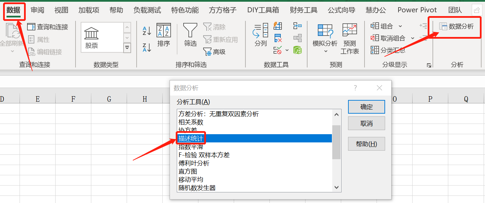
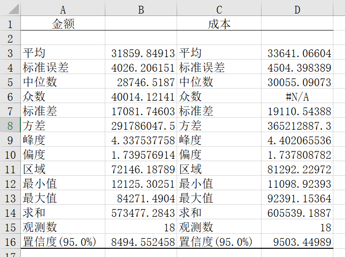

决定用写文章的方式来梳理自己数据分析的体系，这是系列文章的第一篇：《数据分析流程及常用方法》
数据分析的流程
数据分析闭环的流程为：
明确需求
- 明确分析目的（是“拉新”还是“促活”）、分析目标（是新用户还是老用户）、分析口径（比如新用户是指19年10月注册的用户还是19年9月下载的用户）、分析思路、完成时间。
确定思路
- 从分析目的出发，整理需求人思路，请教同事头脑风暴，学习历史资料
处理数据
- 数据来源分为内部来源（数据库、现有报表）和外部来源（爬虫、调查问卷、公开数据集等）
- 对数据的处理包括：收集数据、数据清洗（空值、异常值、重复值、不同来源数据的整合 ==> 可以考虑用合理值比如平均值、中位数、众数代替）、数据计算（均值等）、数据转化（转化成分类数据，标签化数据）
分析数据
- 下文将介绍常用分析方法。
- 常用的分析工具有：Excel、SQL、Python、R、SASS等
展示数据
- 用简单直接的方式传达数据包含的信息，增加数据的易读性。
- 常用的数据图表有：表格、柱状图、折线图、散点图、条形图、饼图、拓扑图等。
- 常用的工具有：Power BI、Tableau等。
撰写报告
- 以文档形式输出，通过数据全方位地科学分析，为决策提供强有力的依据，从而降低决策风险，增加盈利。
常见的报告形式有:PPT、Word、Excel或一些可视化报表。
注意：报告中要注明分析目标、分析口径、数据来源；报告要体现结论、建议。
效果反馈
- 选择恰当且有代表性的指标，及时监控报告中提出的策略执行进度、执行效果等情况。
- 反馈的形式有：监控报表（日报、周报）、分析报告（月报、年报）
数据分析方法
常用的数据分析方法有：金字塔原理、描述分析、对比分析、分类分析、结构分析、相关分析、预测分析。
一、金字塔原理
1、定义
用四个字来概括金字塔原理——结论先行，再具体一些就是：结论先行，以下统上，归类分组，逻辑递进。意思就是说先说结论，再进行分点分类递进式论证。
金字塔原则就是：任何事情都可以归纳出一个中心论点，而此中心论点可由三至七个论据支持，这些一级论据本身也可以是个论点，被二级的三至七个论据支持，如此延伸，状如金字塔。对于金字塔每一层的支持论据，要符合一个原则：MECE原则（Mutually exclusive and collectively exhaustive），即彼此独立，完全穷尽。不遗漏才能不误事，不重叠才能不做无用功。
2、适用场景
- 尝试解决问题时
- 应该从下到上，收集论据，归纳出中心思想，从而建造成坚实的金字塔。有了这个大致的目标，问题解决起来最有效。
- 安排下属解决问题
- 对于某个问题，领导可以根据经验提出假设，迅速列出第一级三至七个支持论据，分别交待给不同的手下。两周后，手下提交报告，领导进行汇总排列，从而建造成坚实的金字塔。有了这个原则，管理起来最有效，领导做得最轻松。
- 问题解决后的汇报、交流
- 需要交流的时候，应该从上到下，从金字塔尖向领导/上级汇报。当你在电梯里遇到领导，给你三十秒，你只汇报中心论点和一级支持论据，领导明白了，事情办成了。有了这个原则，交流起来最有效。
金字塔思维可以通过养成绘制思维导图习惯、分类归纳日常事务、总结文章重点、用最少的文字清晰表达自己的方式来训练培养。
当进行一项分析工作的时候，采用倒金字塔结构，自下而上的思考，采用步骤顺序、空间顺序、重要性顺序、演绎顺序的逻辑进行分析；当总结汇报工作的时候，采用正金字塔结构，先说结论，提高工作交流的效率。
二、描述分析
1、定义
描述分析（即描述性统计分析）：是用来概况数据整体状况以及数据各特征的统计方法。
描述的内容分为集中趋势（均值、中位数、众数、四分位数）、离散程度（方差、标准差、极差、四分位差、变异系数CV = 标准差/平均数的绝对值）、分布形态（偏度、峰度）。
通常我们拿到一份数据集，首先要对获取的数据进行清洗，整理成我们业务所需要的新数据。
缺失值填充：常用方法：剔除法、均值法、最小邻居法、比率回归法、决策树法。
正态性检验：很多统计方法都要求数值服从或近似服从正态分布，所以之前需要进行正态性检验。常用方法：非参数检验的K-量检验、P-P图、Q-Q图、W检验、动差法。
然后再对新数据进行描述性统计分析，常用的是Excel 中自带的分析分析工具（描述性统计分析），Excel加载后即可使用。


2、常用统计指标
- 均值：均值容易受极值的影响，当数据集中出现极值时，所得到的的均值结果将会出现较大的偏差。
- 中位数：数据按照从小到大的顺序排列时，最中间的数据即为中位数。当数据个数为奇数时，中位数即最中间的数，如果有N个数，则中间数的位置为(N+1)/2；当数据个数为偶数时，中位数为中间两个数的平均值，中间位置的算法是(N+1)/2。中位数不受极值影响，因此对极值缺乏敏感性。
- 众数：数据中出现次数最多的数字，即频数最大的数值。众数可能不止一个，众数不仅能用于数值型数据，还可用于非数值型数据，不受极值影响。
- 极差 = 最大值 - 最小值，是描述数据分散程度的量，极差描述了数据的范围，但无法描述其分布状态。且对异常值敏感，异常值的出现使得数据集的极差有很强的误导性。
- 四分位数：数据从小到大排列并分成四等份，处于三个分割点位置的数值，即为四分位数，四分位数分为上四分位数（数据从小到大排列排在第75%的数字，即最大的四分位数）、下四分位数（数据从小到大排列排在第25%位置的数字，即最小的四分位数）、中间的四分位数即为中位数。四分位数可以很容易地识别异常值。（一般通过箱线图表示数据更直观）
- 标准差（Standard Deviation） ，也称均方差（mean square error），是各数据偏离平均数的距离的平均数，用σ表示。标准差是方差的算术平方根。标准差能反映一个数据集的离散程度。标准差越大，波动越大，平均数相同的，标准差未必相同。标准差可以反映平均数不能反映出的东西（比如稳定度等）。
- Excel中可以使用STDEVP()函数来计算总体标准差。
描述性统计分析是属于统计学中比较小的一个理论知识，但是在日常的数据分析中，能够快速地让我们对一份数据进行了解，并能够通过科学的图表展示，发现数据规律，进行未知数据的预测。
3、拓展
环比与同比：
- 环比（环比增长率） = （本期数 - 上期数）/ 上期数 * 100% ==>可用于监控发展趋势
- 同比（同比增长率） = （本期数 - 上一同期数） / 上一同期数 * 100% ==>可用于监控周期性发展变化
标准化与归一化（消除量纲影响）：
- 标准化：x* = (x- x的平均值)/σ，应用于数据不稳定，存在异常值和噪音，不符合正态分布的数据，结果将得到一组均值为0，标准差为1，呈正态分布的一组数据。
- 归一化：x* = (x - min) / (max - min)，应用于数据稳定，不存在极端值，符号正态分布的数据，结果是得到一组范围在[0, 1]的数据
三、对比分析
可比性原则：对象相似，指标同质
时间标准：时间趋势对比、动作前后对比、去年同期对比、前一时期对比
空间标准：A/B测试、相似空间对比、先进空间对比
特点标准：与计划值对比、与平均值对比、与理论值对比比
四、分类分析
定义：根据数据分析对象的特征，按照一定的指标，把数据分析对象分为不同的类别进行研究并深入探索内在的联系与规律。
分组步骤：
- 等距分组：
- 确定维度、组数
- 确定各组组距。组距 = （max - min) / 组数
- 根据组距将数据划分至对应组内
- 不等距分组
- 确定维度、组数
- 根据需求确定各组的上限与下限
- 依据小组上下限进行分组
- 评估分组后数据结构是否满足需求，若满足，则停止，若不满足，则返回第1步
应用实例:
一维：打标签，用一个维度标准将数据分类。如：性别（男、女），年龄（青年、中年、老年）、客户价值（低价值、一般价值、高价值）、用户状态（沉默用户、活跃用户）
二维：列联表，数据按两个维度分类，两个变量交叉得到的分类。如：年龄与客户价值交叉，可得青年低价值、青年一般价值、青年高价值；中年低价值、中年一般价值、中年高价值；老年低价值、老年一般价值、老年高价值。
二维：矩阵图（四象限图），根据事物的两个重要属性作为横纵坐标轴，组成一个坐标系，进行分类分析。如经典的波士顿矩阵：将高业务增长率和市场份额作为横纵坐标轴，从而把公司的业务分为：明星业务、问题业务、金牛业务、瘦狗业务。
五、结构分析
结构分析，即比重分析。是在分类/组分析的基础上计算总体内各组成部分占总体的比重，进而分析总体数据的内部特征。
结构指标（%） = （总体中某一部分 / 总体总量） * 100%
常和分类分析，对比分析搭配使用。
实践举例：
- 一维结构举例：对年龄进行分类–>对各年龄层占比进行分析–>和上个月进行对比
- 二维结构举例：对年龄及性别进行分类–>对性别年龄层交叉结构分析–>同期对比
生活中，可以尝试对自己的消费支出进行结构分析。
六、相关分析
相关分析是研究现象之间是否存在某种依存关系，并对具体有依存关系的现象探讨其相关方向以及相关程度的分析方法。
注意：相关关系并不一定意味着因果关系；但因果关系一定是相关关系。
分析种类：简单相关分析、偏相关分析、距离相关分析。
简单相关分析是对两个变量(一个自变量和因变量)间的相关关系的分析方法。
偏相关分析是指当两个变量同时与第三个变量相关时，将第三个变量的影响剔除，只分析另外两个变量之间相关程度的过程 。
偏相关分析是指当两个变量同时与第三个变量相关时，将第三个变量的影响剔除，只分析另外两个变量之间相关程度的过程 。
- 距离相关分析是为了判别错综复杂的变量及其观测值之间是否具有相似性，是否属于同一类别采用的更为复杂的分析手段。
了解具体的相关系数之前，先了解一些基本概念：
方差这一概念的目的是为了表示数据集中数据点的离散程度；其数学定义为：

标准差（σ）与方差一样，表示的也是数据点的离散程度；其在数学上定义为方差的平方根：

协方差（Covariance），协方差是一个反映两个随机变量相关程度的指标，如果一个变量跟随着另一个变量同时变大或者变小，那么这两个变量的协方差就是正值，反之相反，公式如下：

Pearson（皮尔逊）相关系数
皮尔逊相关系数适用于：
(1)、两个变量之间是线性关系，都是连续数据。
(2)、两个变量的总体是正态分布，或接近正态的单峰分布。（可以先对数据进行标准化处理）
(3)、两个变量的观测值是成对的，每对观测值之间相互独立。
Pearson相关系数公式如下：

或

以上列出的两个个公式等价，其中E是数学期望，cov表示协方差。
pearson是一个介于-1和1之间的值。
| 相关系数r | 相关方向 |
|---|---|
| r > 0 | 正相关 |
| r = 0 | 不存在线性相关 |
| r < 0 | 负相关 |
| 相关系数r | 相关程度 |
|---|---|
| 0.0 <= |r| < 0.3 | 不相关 |
| 0.3 <= |r| < 0.5 | 弱相关 |
| 0.5 <= |r| <0.8 | 中度相关 |
| 0.8 <= |r| <= 1.0 | 强相关 |
《数据挖掘导论》给出了一个很好的图来说明：

在Excel中，可以使用CORREL()函数或PEARSON()函数或者使用数据分析工具来计算Pearson相关系数。
日常使用中，相关分析的判断方式基本为：
- 绘制散点图，可视化呈现相关关系（大致判断是否相关，有无计算相关系数的必要）
- 计算相关系数（大部分情况会使用Pearson相关系数）
- 进行判断
七、预测分析
预测分析是一种统计或数据挖掘解决方案，通过处理目前数据来预测未来结果或趋势的分析方法。
基本原理：
- 惯性原理：通过研究业务的过去和现在的状态，找出其变化的规律，向未来延伸，从而预测其未来状态的原理。前提是“业务的稳定性”。
- 相关原理：“因果关系”，“依存关系”
- 类推原理：利用类似事物、已知事物的变化规律来预测未来状态
- 概率推断原理：小概率事件不可能发生
主要作用：精准营销（预知用户行为，并根据用户行为匹配最优营销策略，比如商品推荐）、规避风险（提前预知风险的发生）
预测方法：
- 定性分析法（主要应用于无历史数据可参考的情况）
- 专家会议法
- 德尔菲法
- 类推预测法
- 定量分析法（有历史数据参考，比定性分析精准一些）
- 简单平均法、移动平均法（无法反映数据的波动、变化趋势）
- 一元线性回归预测法、多元线性回归预测法、非线性回归预测法
- ……
多元回归分析(Multiple Regression Analysis)是指在相关变量中将一个变量视为因变量，其他一个或多个变量视为自变量，建立多个变量之间线性或非线性数学模型数量关系式并利用样本数据进行分析的统计分析方法。
定量分析法部分需要深入学习统计学知识，本文不作进一步介绍。
OK，本文首先介绍了数据分析的流程（明确需求-确定思路-处理数据-分析数据-展示数据-撰写报告-效果反馈），然后介绍了一些常用的数据分析方法（金字塔原理、描述分析、对比分析、分类分析、结构分析、相关分析、预测分析）。本章内容主要是数据分析的“道”，是我们工作的思路、工作的指导方向，我个人觉得比“术”更加重要，图表可视化做得再美观也没有实际的结论来得更实际。
本文的理论来源不限于《金字塔原理》、知乎上有关数据分析的回答，网易云课堂上的课程等，本文仅为本人对所学知识的整理与归纳，会引用我记不清是哪儿来的话，如有侵权，请联系我删改，在此谢谢所有知识分享者。